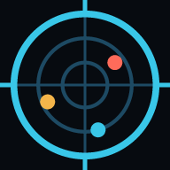

AirscopeGet an alert when something matching a rule appears, or comes back after five minutes away. Keywords match names, classifications and drone serials; wrap a keyword in slashes for a pattern, like /^1581/.
Muted devices never alert and are hidden from the live list. Mute single devices from their detail sheet, or add a keyword.
None yet.
No scan yet.
Location stays on this phone unless you export it. It's used to count how many places a device was seen.
A summary of this session written for an AI assistant. Copy it into ChatGPT, Claude or Gemini to talk through what you saw. Nothing is sent from this app.
iPhones don't let any app or site scan Wi-Fi. Type or paste network names from Settings › Wi-Fi to classify them.
It listens for Bluetooth Low Energy advertisements, the short public broadcasts devices send so others can find them, and classifies what it hears. It never connects to, pairs with, or sends anything to another device. Everything runs on this phone.
iPhone: open this page in Bluefy, a free web browser with Bluetooth support. Safari has no Bluetooth access. Android, Mac, PC: Chrome with chrome://flags › Experimental Web Platform features turned on.
Wi-Fi scanning: Apple blocks every iPhone app and website from listing Wi-Fi networks. Direction or exact location: one phone's signal strength gives rough closeness, not a bearing, and the radar's angles are arbitrary. iOS may hide some Apple Find My broadcasts from browsers.
Drones are decoded from their Remote ID broadcast (serial number, position, altitude), which drone rules require to be public. Beacons and trackers are identified by published formats. Vehicles, fleet equipment, cameras and public-safety gear are mostly matched by name, which is weaker: names can be anything. A match is context, not proof of who owns a device or what it's used for.
Observing public broadcasts is legal in most places, but using what you collect to follow, harass or track a person is not. Respect local laws.